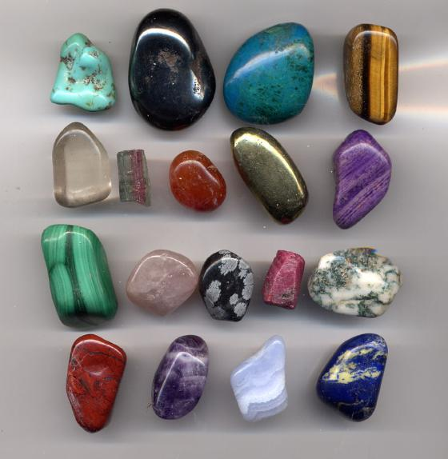

Una roca, mineral, vidrio o producto orgánico de origen natural, que al ser cortado o pulido se puede usar en la confección de joyas u objetos artísticos. Son piedras preciosas minerales como por ejemplo rubí, diamante, esmeralda, zafiro; semipreciosas como espinela, alejandrita, tanzanita o granate; vidrios naturales como la obsidiana; rocas como la malaquita, el lapislázuli o el ónix, productos fósiles de origen orgánico como el azabache o el ámbar y productos biogénicos como las perlas (producida por una ostra) o el coral (formado por la secreción calcárea de pequeños pólipos marinos).
